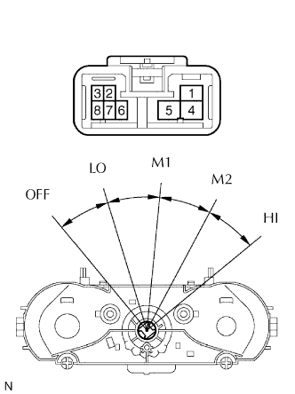

CỤM ĐIỀU KHIỂN ĐIỀU HOÀ KHÔNG KHÍ > KIỂM TRA |
| 1. KIỂM TRA CỤM ĐIỀU KHIỂN ĐIỀU HOÀ KHÔNG KHÍ |
|  |
Đo điện trở của công tắc quạt gió.
| Tình trạng công tắc | Nối dụng cụ đo | Điều kiện tiêu chuẩn |
| OFF | 1 - 2 - 4 - 5 - 6 | 10 kΩ trở lên |
| LO | 5 - 6 | Dưới 1 Ω |
| LO - M1 | 2 - 5 - 6 | Dưới 1 Ω |
| M1 | 2 - 5 - 6 | Dưới 1 Ω |
| M1 - M2 | 1 - 2 - 5 - 6 | Dưới 1 Ω |
| M2 | 1 - 5 - 6 | Dưới 1 Ω |
| M2 - HI | 1 - 4 - 5 - 6 | Dưới 1 Ω |
| HI | 4 - 5 - 6 | Dưới 1 Ω |
Kiểm tra độ sáng.
Nối cực dương (+) ắc quy vào cực 8 và đầu âm (-) vào cực 3. Kiểm tra rằng các bóng đèn sáng lên. Nếu bóng đèn không sáng, thì thay thế nó.